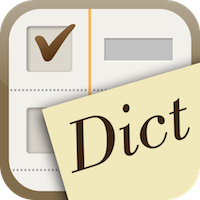
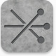

Apps
WordRemindr

Simple, dedicated to-do list style app just for words memorization. Unlock full potential of the iOS system dictionary for fast and lightweight dictionary access.
SyncScore – Classical music with score
50+ Carefully curated tracks of various SyncScore apps. “SyncScore : Best Collection” is the ultimate hub for all SyncScore apps.
Tocsin
Tocsin is a motion detecting alarm integrated with Guided Access. Turn on iOS Guided Access and initiate Tocsin. Once sudden movement of the device is detected, Tocsin makes audio and visual alert.
OnMelody

OnMelody is a search engine using Musipedia database. You can identify the title and the composer of classical melody with just few taps.